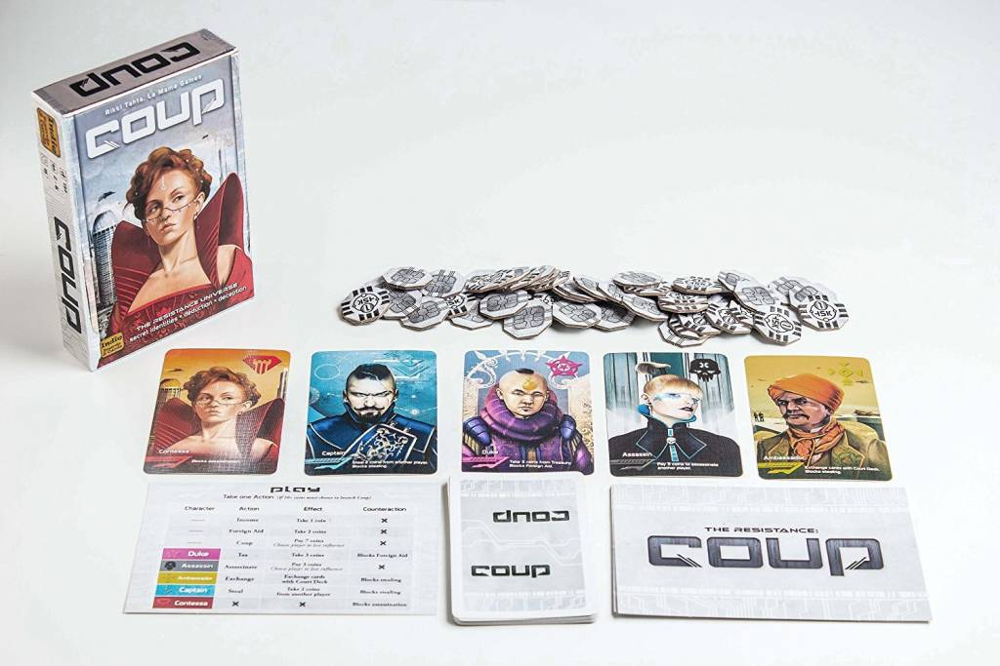

Game Implementation
The starting state of the menu will appear collapsed on smaller screens, and will appear non-collapsed on larger screens. When toggled using the button below, the menu will change.
Make sure to keep all page content within the #page-content-wrapper. The top navbar is optional, and just for demonstration. Just create an element with the #menu-toggle ID which will toggle the menu when clicked.

The starting state of the menu will appear collapsed on smaller screens, and will appear non-collapsed on larger screens. When toggled using the button below, the menu will change.
Make sure to keep all page content within the #page-content-wrapper. The top navbar is optional, and just for demonstration. Just create an element with the #menu-toggle ID which will toggle the menu when clicked.
Game Overview
Coup is a cardgame that revolves around strategy and bluffing. The game is played with 2-6 players and there are five unique cards each with their own abilities, namely the captain, duke, ambassador, assassin and countessa. There are three copies of each card in the deck, and each player starts with two random cards and two coins. The objective of the game is to be the only player with cards left.
A round is played as follows: each players chooses one of the possible actions. The possible actions are:
- Income: take one coin.
- Foreign Aid: take two coins, can be blocked with a duke.
- Coup: spend seven coins to make one chosen player give up one of their cards.
- Taxes: take three coins (duke ability).
- Assassinate: spend three coins to make one chosen player give up one of their cards (assassin ability).
- Steal: take two coins from another player. Can be blocked with a captain or ambassador (captain ability)
- Swap Cards: draw two cards from the deck and add them to your hand, choose two out of four and put the remaining two back in the deck (ambassador ability).
Furthermore, the countessa has no active ability but can instead be used to block an assassination attempt. A player can choose any action (provided they have enough coins for it), even though they may not actually have the corresponding card. Other players can then choose to believe the player or call their bluff. When a wrongful bluff is called, the player calling the bluff loses one card.